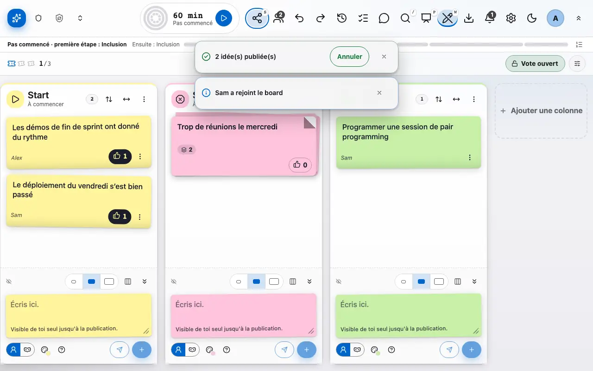
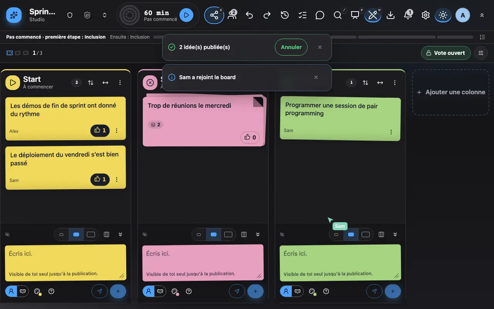
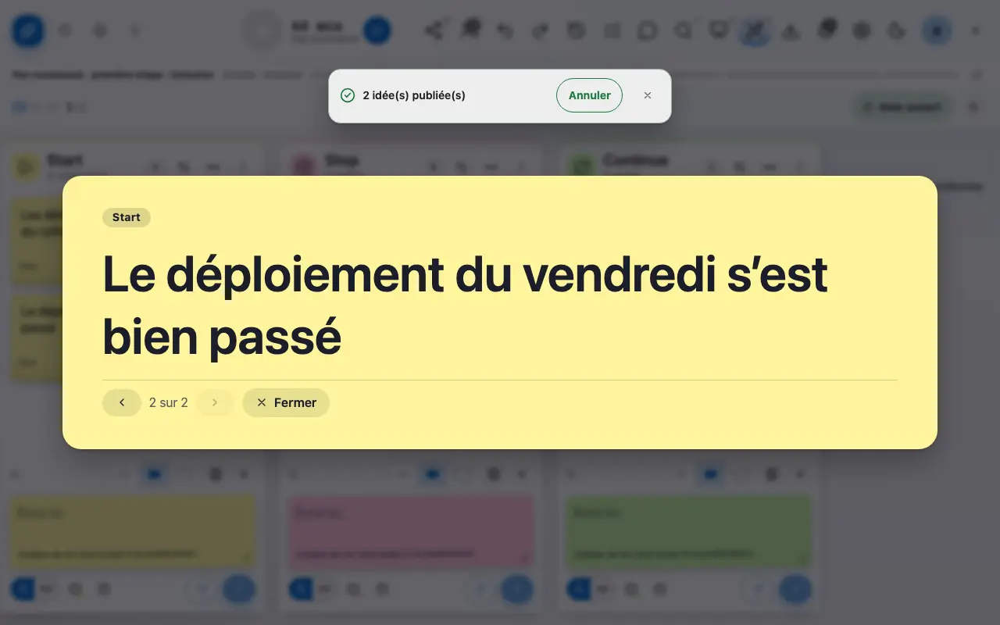
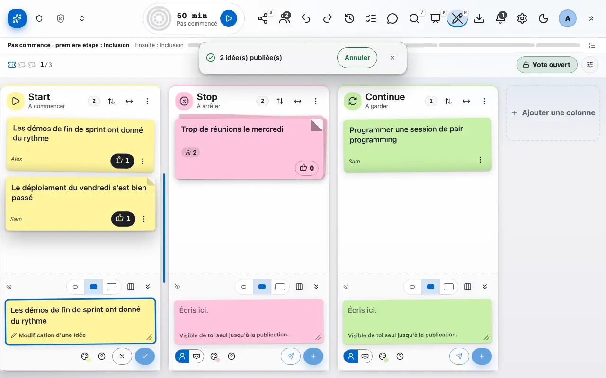
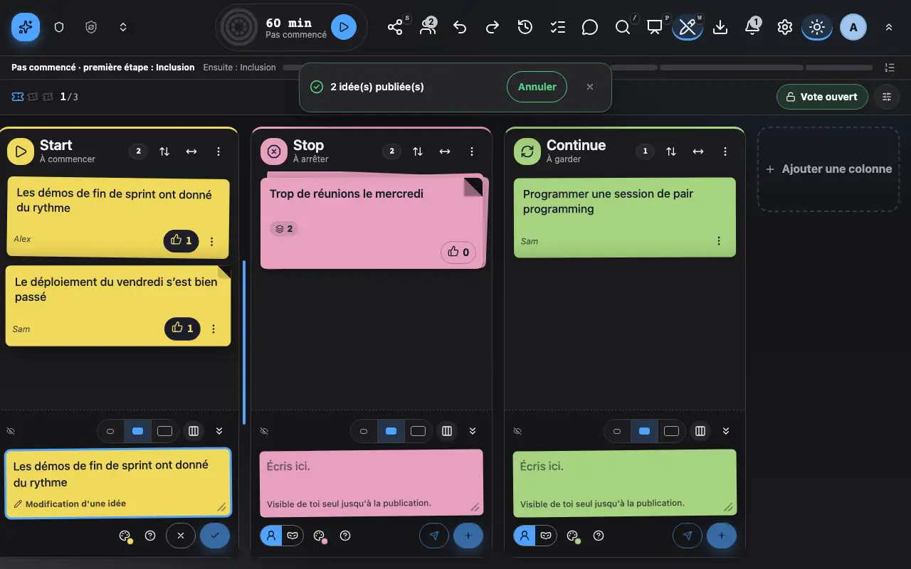
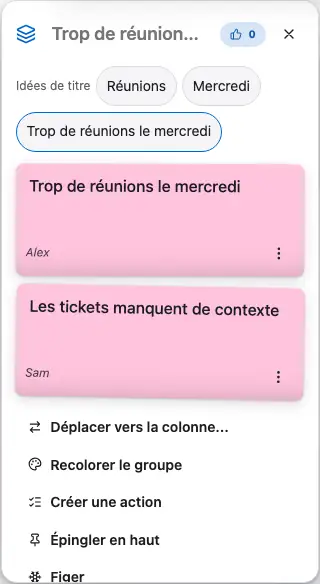
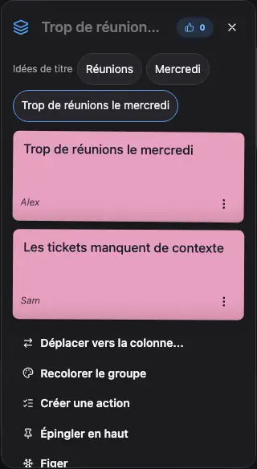

Écrire et publier des idées
Les idées restent privées tant que tu ne les publies pas.
1 Chaque colonne a son champ de saisie en haut, les brouillons restent sur ton appareil.
Chaque colonne a son champ de saisie, au pied de la colonne sous ses idées (il reste visible pendant que les idées défilent), avec la mention « Visible de toi seul jusqu'à la publication ». Entrée garde l'idée en brouillon privé sur ton appareil: elle rejoint ton plateau, empilé au-dessus du champ, comme un post-it incliné portant un ruban « Brouillon » que personne d'autre ne voit. Le compteur de la barre d'outils dit combien de brouillons attendent, et « Tout publier » les envoie d'un coup; Ctrl+Entrée publie directement. Publie quand tu es prêt: l'idée apparaît chez tous les participants.
Sur téléphone, un bouton « Écrire une idée » ouvre le champ dans un panneau au bas de l'écran: une pastille par colonne dit où va l'idée (la colonne affichée par défaut), et le plateau de brouillons reste dans la colonne. Tu peux grouper des idées proches en les glissant l'une sur l'autre (sur un écran tactile, maintiens le doigt sur l'idée jusqu'à ce qu'elle se soulève, puis glisse-la; le menu de l'idée propose aussi « Regrouper avec... »), et voter avec le pouce.
Un bandeau permet d'annuler une publication faite par erreur pendant quelques secondes.
Une idée longue montre ses premières lignes et un lien « Lire la suite » qui ouvre le reste (« Réduire » le replie); le texte n'est jamais plus petit que 14 px. Les post-its de hauteurs différentes se rangent dans la colonne sans trous, et la colonne défile. Pour en voir plus ou moins sur ton écran, appuie sur d pour changer la densité (confortable, compacte, serrée) et sur +, - et 0 pour agrandir, réduire et revenir à 100 % le zoom des post-its. Les deux sont personnels, retenus sur cet appareil pour chaque type d'écran, et réglables aussi dans le profil (mode avancé).
Les post-its bougent avec retenue: le coin d'un post-it se décolle quand la souris s'y arrête, ton idée publiée vole jusqu'à sa place et s'y colle, l'idée d'un autre arrive en voletant, et un groupe se cale d'un coup quand un post-it le rejoint. Chaque mouvement dure moins de 0,4 seconde, aucun ne déplace un post-it que tu modifies, et tous s'arrêtent avec le réglage de mouvement « Réduites » ou la préférence du système.


2 Un double clic ou un double toucher sur une idée l’agrandit sur ton appareil, les flèches passent à l’idée voisine et Échap referme.
Pour lire une idée en grand, fais un double clic dessus (ou un double toucher sur téléphone), appuie sur z sur l’idée sélectionnée, ou choisis « Agrandir » dans son menu à trois points. L’idée occupe l’écran sur ton appareil seulement : personne d’autre ne la voit et rien n’est envoyé. Les flèches (ou Page précédente et Page suivante) passent à l’idée précédente ou suivante de la même colonne ou du même groupe, et Échap ou « Fermer » te ramène au board avec le focus sur l’idée. Un simple toucher, un vote, un glisser ou le menu ne sont ni ralentis ni modifiés par le geste, et une idée masquée par le facilitateur ne peut pas être agrandie.

3 Pour changer une idée déjà publiée, ouvre-la dans la zone d’écriture : « Modifier » dans les trois points, ou glisse-la sur la zone ; elle reste sur le board avec ses votes jusqu’à « Enregistrer ». « Remettre dans mes brouillons » la retire du board pour tout le monde et la range en haut de ta pile.
Une idée publiée peut encore être modifiée ou reprise, par son auteur et par les facilitateurs (les autres ne voient pas ces choix). Modifier (dans les trois points de l'idée, ou en glissant l'idée sur la zone d'écriture d'une colonne) charge son texte et sa couleur dans le champ de saisie, qui affiche « Modification d'une idée » avec Enregistrer et Annuler. L'idée reste sur le board, avec ses votes et son groupe, jusqu'à l'enregistrement ; les autres ne voient qu'une discrète marque « En cours de modification », et une modification annulée ne laisse aucune trace. Un facilitateur modifie n'importe quelle idée de la même façon, y compris sur un board verrouillé.
Remettre dans mes brouillons (même menu, ou dépose l'idée sur la pile de brouillons qui apparaît dans la zone d'écriture pendant que tu glisses) retire l'idée du board pour tout le monde et la range, avec son texte et sa couleur, en haut de la pile de brouillons de son auteur, dans la même colonne, prête à être réécrite et publiée à nouveau. Quand un facilitateur renvoie l'idée de quelqu'un d'autre, elle va dans la pile de son auteur, jamais dans la sienne, et son auteur en est prévenu. Ses votes partent avec elle : une confirmation les compte d'abord (et elle est aussi demandée pour une idée épinglée ou celle de quelqu'un d'autre) ; une fois le vote clos, une idée votée reste, et une idée gelée ou un board verrouillé refusent, avec la raison en infobulle de l'entrée grisée. Annuler (Ctrl+Z, ou « Annuler » dans l'avis) remet l'idée sur le board comme une nouvelle idée et retire son brouillon ; l'historique la liste comme « renvoyé en brouillon » et un facilitateur peut restaurer depuis lui. L'entrée n'est proposée que si toutes les personnes présentes utilisent une version qui la connaît. Les deux choix ont une entrée de menu pour qui ne glisse pas, avec le clavier ou un lecteur d'écran qui annonce le résultat ; l'idée vole jusqu'à la pile, sauf avec le mouvement réduit.


4 Les trois points d’un groupe donnent les mêmes actions rapides qu’un post-it (couleur, renommer, déplacer, fusionner, dissoudre) ; un groupe s’ouvre dans sa colonne et chaque colonne garde le sien.
Un groupe a un menu à trois points sur sa pile, avec le même aspect et le même usage au clavier que le menu d'un post-it (sur écran tactile les points sont toujours visibles, à la souris ils apparaissent quand tu poses le pointeur sur la pile). Il propose les pastilles de couleur et « Plus de nuances », Ouvrir, Renommer (le groupe s'ouvre avec son titre sélectionné), Créer une action, Déplacer vers la colonne, Fusionner dans un autre groupe de la colonne et Dissoudre. Les facilitateurs ont aussi Épingler et Geler. Le pied du panneau propose les mêmes actions: rien n'est caché à un seul endroit. Sur un board verrouillé il ne reste que ce qui ne modifie pas le groupe, et un groupe qui a des votes demande confirmation avant d'être dissous. Recolorer un groupe utilise les mêmes huit pastilles et la même palette avec « Plus de nuances » qu'un post-it, et recolore toutes les notes du groupe sauf les notes gelées.
Chaque colonne garde son propre groupe ouvert. Ouvrir un groupe dans une autre colonne ne ferme pas le premier: tu compares deux colonnes côte à côte sur un grand écran ou une télé; ouvrir un autre groupe de la même colonne remplace celui qui y est affiché. Échap ferme le panneau qui a le focus (ou le dernier ouvert) et rend le focus à sa pile. Sur téléphone une colonne remplit l'écran: un point sur l'onglet d'une colonne dit qu'un groupe y est ouvert, et en revenant en balayant tu le retrouves ouvert. Ce que tu ouvres reste ta vue: l'écran des autres ne change pas.

